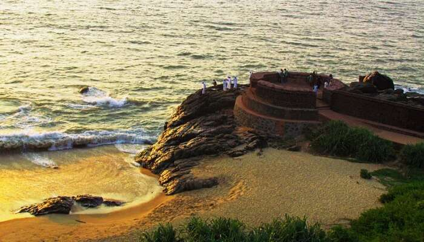
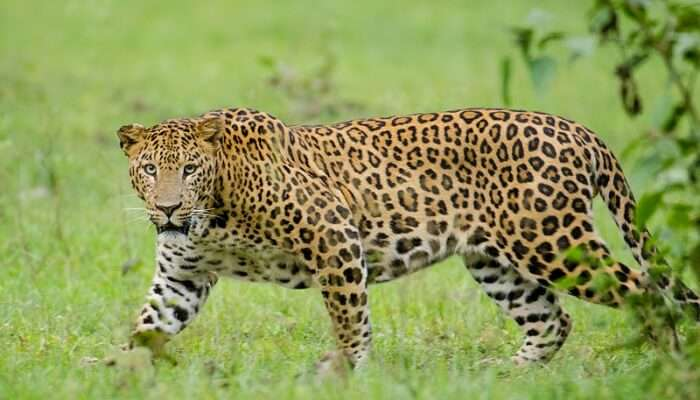

Bekkal Fort

Mallikarjuna Temple

Parappa Wildlife Sanctuary

Malom Wildlife Sanctuary

It is the northernmost district of Kerala and is also known as Saptha Bhasha Sangama Bhoomi (The land of seven languages) as seven languages namely, Malayalam, Tulu, Kannada, Marathi, Konkani, Beary, and Urdu are spoken.Situated in the rich biodiversity of Western Ghats, it is known for the Chandragiri and Bekal Forts,Chandragiri River, historic Kolathiri Rajas, natural environment of Ranipuram and Kottancheri Hills, historical and religious sites like the Madiyan Kulom temple, Madhur Temple, Ananthapuram Lake Temple and Malik Deenar Mosque. The historic hill of Ezhimala is located on the southern portion of Kavvayi Backwaters of Nileshwaram. Kasaragod is located 50 km south of the major port city & a commercial hub Mangalore and 364 km north of the major port city Kochi.
Kasaragod district has the maximum number of rivers in Kerala - 12. Kasaragod town is located on the estuary where the Chandragiri River, which is also the longest river in the district, empties into Arabian Sea. Kasaragod is home to several forts which include Arikady fort, Bekal Fort, Chandragiri Fort, and Hosdurg Fort.Bekal Fort is also the largest fort in Kerala.